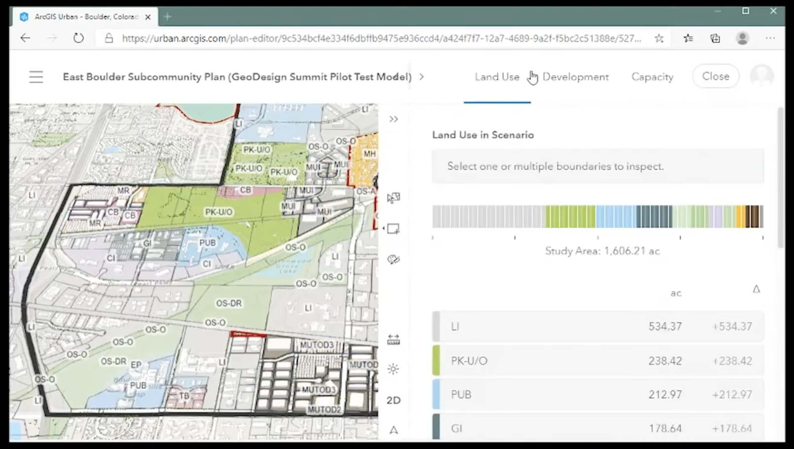

West Campus Redesign
My part in a team project involved using ArcGIS Pro and ArcGIS GeoPlanner (dearly departed) to model and assess site permeability.
Project Details
For this group project, we were tasked with selecting a study area and modeling an ecological effect of our choosing. Our study area was selected from within the boundary of the West Campus District Plan [Figure 1], a long term project proposal at UW-Madison in partnership with University Research Park (learn more here: https://finadmin.wisc.edu/westcampus/). For our study, we chose to model improvements in groundwater retention and tree canopies of the current Parking Lot 60 location and it’s south-bordering block [Figure 2]. Team members used online software i-Tree Canopy to model existing and proposed tree canopy coverage and graph changes in long term carbon sequestration and air quality metrics.
My role was to model existing land cover and groundwater retention, and repeating this analysis to fit the design proposal. Using ArcGIS Pro I created two shapefile layers that represented the existing and proposed land covers that would fit our analysis; bare lawn, permeable pavement, and non-permeable pavement [Figure 2 & Figure 3].
After bringing these layers into a new scenario within ArcGIS GeoPlanner, I created a dashboard that would calculate water-capture quantities (gallon/sqfoot) per each land cover. Through this process, I was able to quantify the success of the proposal’s green infrastructure goals.
Since doing this project, ArcGIS GeoPlanner has been retired by ESRI, however its geodesign capabilities can be found in other ESRI products. ArcGIS Pro and Online Map Viewer are capable of suitability modeling. The most holistic workflow transition would be using ArcGIS Urban, a new product made specifically to evaluate impacts of land-use and development scenarios, including 3D visualizations. If I were to recreate the workflow of this project, I would do it using Urban [Figure 4].
Image Gallery
 [Figure 1] Official concept map of West Campus District Plan from UW-Madison project site.
[Figure 1] Official concept map of West Campus District Plan from UW-Madison project site.
 [Figure 2] Existing conditions landcover shapefile layer made in ArcGIS Pro.
[Figure 2] Existing conditions landcover shapefile layer made in ArcGIS Pro.
 [Figure 3] Proposed conditions landcover shapefile layer.
[Figure 3] Proposed conditions landcover shapefile layer.

Give your image a caption. People love context.